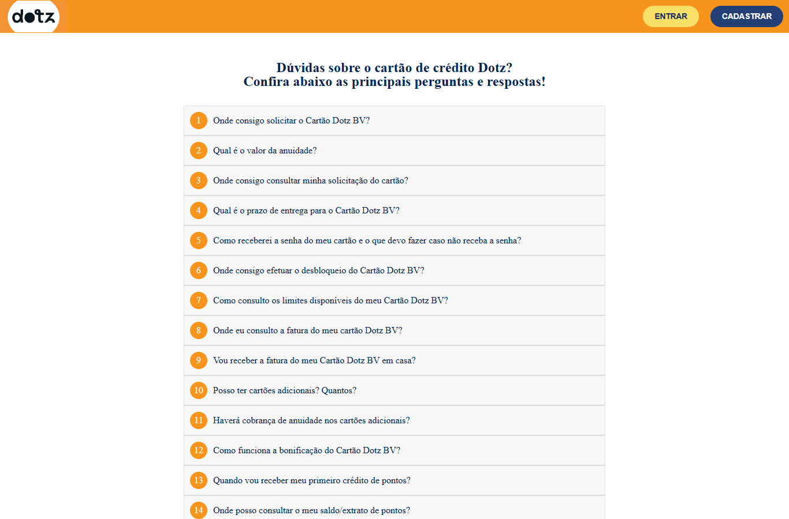
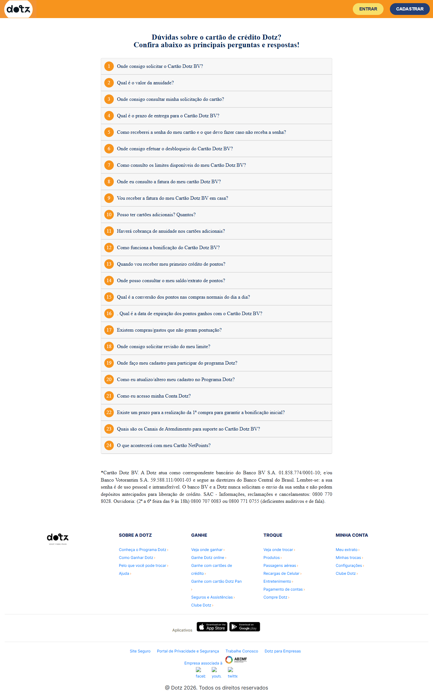

Sistema de Investigação de Marca e Identidade Online
https://cartaodotz.dotz.com.br/faq-bv
Prioridade: MEDIUM · Cenário: B_AMBIGUOUS_COMMUNICATION · Revisão humana: PENDING
Trata-se de página de FAQ do 'Cartão Dotz BV' hospedada no domínio da parceira comercial Dotz (cartaodotz.dotz.com.br). Embora a página possua identidade visual própria da Dotz e inclua aviso expresso de atuação como correspondente bancário do Banco BV S.A. / Banco Votorantim S.A. com canais de SAC e Ouvidoria, o texto informa apenas os CNPJs do próprio banco contratante, omitindo o CNPJ e a razão social da entidade correspondente (Dotz) na página inspecionada. Dessa forma, classifica-se como B_AMBIGUOUS_COMMUNICATION (REVIEW_REQUIRED / MEDIUM) para verificação de conformidade cadastral e transparência de identificação do correspondente. [Revisor: CONFIRM] A análise está correta e bem fundamentada. Trata-se de página de FAQ do produto co-branded 'Cartão Dotz BV' no domínio da parceira comercial Dotz (cartaodotz.dotz.com.br), que atua declaradamente como correspondente bancário do Banco BV (`E-TXT-010`). Apesar de informar sua condição de correspondente, os CNPJs do banco contratante e os números de SAC e Ouvidoria (`E-TXT-010`, `E-TXT-011`), a página omite o CNPJ e a razão social da própria pessoa jurídica correspondente (`E-FTR`, `E-SHOT-FULL`). Confirma-se a classificação REVIEW_REQUIRED com prioridade MEDIUM.


| Ref | Tipo | Local | Conteúdo |
|---|---|---|---|
| E-URL | domain | url | URL final: https://cartaodotz.dotz.com.br/faq-bv (domínio: cartaodotz.dotz.com.br) |
| E-COLLECT | network | collection | Status da coleta: OK; HTTP 200; ocorrências: network did not become idle (continuing) |
| E-DISC-001 | text | search_index | Índice de busca (grounding): dotz.com.br — **URL:** `https://dotz.com.br/` | **Uso da marca e recursos:** Promove em destaque o produto co-branded *"Cartão Dotz BV"*, com página dedicada à captação, benefícios e perguntas frequentes sobre o cartão de crédito | Declara no rodapé que *"A Dotz atua como correspondente bancário do Banco BV S.A. 01.858.774/0001-10; e/ou Banco Votorantim S.A. 59.588.111/0001-03 e segue as diretrizes do Banco Central do Brasil"*, informando SAC e Ouvidoria do BV, mas omite no mesmo bloco textual o número do CNPJ e a razão social completa da própria entidade correspondente da Dotz |
| E-SHOT-VIEWPORT | screenshot | viewport | evidence\C205d56101f\attempt-1\viewport.png (sha256 dba90926b9ebf9f1…) |
| E-SHOT-FULL | screenshot | page | evidence\C205d56101f\attempt-1\fullpage.png (sha256 e9eaaef78c6cc8ed…) |
| E-TITLE | title | head | Cartões Dotz |
| E-META-1 | meta | head | description: site description |
| E-META-2 | meta | head | og:title: Dotz |
| E-META-3 | meta | head | author: Dotz |
| E-FOLD | text | viewport (acima da dobra) | Entrar Cadastrar Dúvidas sobre o cartão de crédito Dotz? Confira abaixo as principais perguntas e respostas! 1 Onde consigo solicitar o Cartão Dotz BV? 2 Qual é o valor da anuidade? 3 Onde consigo consultar minha solicitação do cartão? 4 Qual é o prazo de entrega para o Cartão Dotz BV? 5 Como receberei a senha do meu cartão e o que devo fazer caso não receba a senha? 6 Onde consigo efetuar o desbloqueio do Cartão Dotz BV? 7 Como consulto os limites disponíveis do meu Cartão Dotz BV? 8 Onde eu consulto a fatura do meu cartão Dotz BV? 9 Vou receber a fatura do meu Cartão Dotz BV em casa? 10 Posso ter cartões adicionais? Quantos? 11 Haverá cobrança de anuidade nos cartões adicionais? 12 Como funciona a bonificação do Cartão Dotz BV? 13 Quando vou receber meu primeiro crédito de pontos? 14 Onde posso consultar o meu saldo/extrato de pontos? |
| E-FTR | text | footer | SOBRE A DOTZ Conheça o Programa Dotz Como Ganhar Dotz Pelo que você pode trocar Ajuda GANHE Veja onde ganhar Ganhe Dotz online Ganhe com cartões de crédito Ganhe com cartão Dotz Pan Seguros e Assistências Clube Dotz TROQUE Veja onde trocar Produtos Passagens aéreas Recargas de Celular Entretenimento Pagamento de contas Compre Dotz MINHA CONTA Meu extrato Minhas trocas Configurações Clube Dotz Aplicativos Site Seguro Portal de Privacidade e Segurança Trabalhe Conosco Dotz para Empresas Empresa associada à @ Dotz 2026. Todos os direitos reservados |
| E-CTA-1 | cta | page | ENTRAR |
| E-CTA-2 | cta | page | CADASTRAR <https://login.dotz.com.br/?cadastro=true> |
| E-CTA-3 | cta | footer | Site Seguro <https://www.dotz.com.br/Site-Seguro> |
| E-CTA-4 | cta | footer | Portal de Privacidade e Segurança <https://privacidade.dotz.com.br/> |
| E-CTA-5 | cta | footer | Trabalhe Conosco <https://www.vagasdotz.com/vagas> |
| E-CTA-6 | cta | footer | Dotz para Empresas <http://aquitemdotz.com.br/incentivo> |
| E-CTA-7 | cta | footer | Empresa associada à |
| E-CONTACT-1 | contact | footer | <https://www.facebook.com/dotzoficial> |
| E-IMG-1 | image | page (acima da dobra) | imagem alt='' src=https://cartaodotz.dotz.com.br/assets/images/new_logo_dotz.jpg (115x55, acima da dobra) |
| E-TXT-001 | text | page | Onde consigo solicitar o Cartão Dotz BV? |
| E-TXT-002 | text | page | Qual é o prazo de entrega para o Cartão Dotz BV? |
| E-TXT-003 | text | page | Onde consigo efetuar o desbloqueio do Cartão Dotz BV? |
| E-TXT-004 | text | page | Como consulto os limites disponíveis do meu Cartão Dotz BV? |
| E-TXT-005 | text | page | Onde eu consulto a fatura do meu cartão Dotz BV? |
| E-TXT-006 | text | page | Vou receber a fatura do meu Cartão Dotz BV em casa? |
| E-TXT-007 | text | page | Como funciona a bonificação do Cartão Dotz BV? |
| E-TXT-008 | text | page | . Qual é a data de expiração dos pontos ganhos com o Cartão Dotz BV? |
| E-TXT-009 | text | page | Quais são os Canais de Atendimento para suporte ao Cartão Dotz BV? |
| E-TXT-010 | text | page | *Cartão Dotz BV. A Dotz atua como correspondente bancário do Banco BV S.A. 01.858.774/0001-10; e/ou Banco Votorantim S.A. 59.588.111/0001-03 e segue as diretrizes do Banco Central do Brasil. Lembre-se: a sua senha é de uso pessoal e intransferível. O banco BV e a Dotz nunca solicitam o envio da sua senha e não pedem depósitos antecipados para liberação de crédito. SAC - Informações, reclamações e |
| E-TXT-011 | text | page | cancelamentos: 0800 770 8028. Ouvidoria: (2ª a 6ª feira das 9 às 18h) 0800 707 0083 ou 0800 771 0755 (deficientes auditivos e de fala). |
| Dimensão | Sinal | Achado | Refs |
|---|---|---|---|
| VISUAL_IDENTITY | LEGITIMATE | A página apresenta identidade visual própria da marca parceira Dotz (cores laranja e branco, logotipo Dotz no cabeçalho e rodapé), sem simular o ambiente gráfico institucional do Banco BV. | E-SHOT-VIEWPORT E-SHOT-FULL E-IMG-1 |
| DECLARED_COMMERCIAL_IDENTITY | CONFUSION | Embora identifique a marca comercial 'Dotz', a página exibe apenas os CNPJs do Banco BV S.A. (01.858.774/0001-10) e Banco Votorantim S.A. (59.588.111/0001-03), não apresentando a razão social nem o CNPJ da entidade correspondente bancária. | E-DISC-001 E-TXT-010 E-FTR E-SHOT-FULL |
| CORRESPONDENT_TRANSPARENCY | LEGITIMATE | Há declaração expressa na página informando que 'A Dotz atua como correspondente bancário do Banco BV S.A. 01.858.774/0001-10; e/ou Banco Votorantim S.A. 59.588.111/0001-03 e segue as diretrizes do Banco Central do Brasil', acompanhada dos telefones de SAC e Ouvidoria. | E-TXT-010 E-TXT-011 E-SHOT-FULL |
| INSTITUTIONAL_LANGUAGE | LEGITIMATE | A comunicação trata de perguntas frequentes (FAQ) sobre o cartão de crédito co-branded 'Cartão Dotz BV', distinguindo claramente o banco BV e a Dotz no aviso de segurança. | E-FOLD E-TXT-001 E-TXT-010 |
| LOGO_USAGE | LEGITIMATE | Não há uso indevido do logotipo do Banco BV na página; apenas o logotipo da própria Dotz é exibido. | E-IMG-1 E-SHOT-VIEWPORT E-SHOT-FULL |
| SERVICE_JOURNEY | NEUTRAL | Página informativa de dúvidas frequentes (FAQ) sobre o Cartão Dotz BV, com botões de login/cadastro na plataforma Dotz, sem formulários diretos de captação bancária na tela inspecionada. | E-URL E-FOLD E-CTA-1 E-CTA-2 |
| CONTACT_CHANNELS | LEGITIMATE | São informados os canais de SAC (0800 770 8028) e Ouvidoria (0800 707 0083 e 0800 771 0755) no bloco de aviso regulatório. | E-TXT-010 E-TXT-011 |
| CONSUMER_CONFUSION | NEUTRAL | O consumidor identifica tratar-se do parceiro comercial Dotz ofertando produto co-branded ('Cartão Dotz BV'), porém a ausência do CNPJ próprio do correspondente bancário na página requer verificação de conformidade formal. | E-FOLD E-TXT-010 E-SHOT-FULL |
Trata-se de página de FAQ do 'Cartão Dotz BV' hospedada no domínio da parceira comercial Dotz (cartaodotz.dotz.com.br). Embora a página possua identidade visual própria da Dotz e inclua aviso expresso de atuação como correspondente bancário do Banco BV S.A. / Banco Votorantim S.A. com canais de SAC e Ouvidoria, o texto informa apenas os CNPJs do próprio banco contratante, omitindo o CNPJ e a razão social da entidade correspondente (Dotz) na página inspecionada. Dessa forma, classifica-se como B_AMBIGUOUS_COMMUNICATION (REVIEW_REQUIRED / MEDIUM) para verificação de conformidade cadastral e transparência de identificação do correspondente.
Há declaração de correspondente ou de parceria, sem identificação suficiente ou sem confirmação cadastral.
| Tipo | Valor | Ref | Contexto |
|---|---|---|---|
| domain | dotz.com.br | E-URL | |
| cnpj | 01.858.774/0001-10 | E-DISC-001 | requentes sobre o cartão de crédito | Declara no rodapé que *"A Dotz atua como correspondente bancário do Banco BV S.A. 01.858.774/0001-10 |
| cnpj | 59.588.111/0001-03 | E-DISC-001 | ; e/ou Banco Votorantim S.A. 59.588.111/0001-03 |
| institution_name_displayed | Banco BV S.A | E-DISC-001 | |
| institution_name_displayed | Banco Votorantim S.A | E-DISC-001 | |
| social_profile | https://www.facebook.com/dotzoficial | E-CONTACT-1 | |
| phone | 0800 770 8028 | E-TXT-011 | |
| phone | 0800 707 0083 | E-TXT-011 | |
| phone | 0800 771 0755 | E-TXT-011 | |
| correspondent_declaration | correspondente bancário | E-TXT-010 | *Cartão Dotz BV. A Dotz atua como correspondente bancário do Banco BV S.A. 01.858.774/0001-10; e/ou Banco Votorantim S.A. 59.588.111/0001-03 e segue as diretrizes do Banco Central do Brasil. Lembre-se |
Mapeamento indicativo para apoio à auditoria. Não constitui conclusão regulatória; a decisão definitiva pertence à auditoria.
Fonte: NORMATIVE
Art. 14. O contrato de correspondente deve estabelecer: [...] II - vedação à utilização, pelo contratado, de logomarca ou de outros atributos que sejam similares aos adotados pela instituição contratante em suas agências, postos de atendimento, sítio eletrônico na internet, aplicativo ou outras plataformas de comunicação em rede;
Evidência observada: E-IMG-1 E-SHOT-FULL E-SHOT-VIEWPORT
Fonte: NORMATIVE
Art. 14. O contrato de correspondente deve estabelecer: [...] III - divulgação ao público, pelo contratado, de sua condição de prestador de serviços à instituição contratante, identificada pelo nome com que é conhecida no mercado, com descrição dos produtos e serviços oferecidos e canais de contato da instituição contratante, inclusive de sua ouvidoria, em local visível, em destaque e em formato legível, por meio de: a) sítio eletrônico do correspondente na internet, acessível na página inicial; b) aplicativo e outras plataformas de comunicação em rede do correspondente; [...]
Hipótese: Há declaração da condição de correspondente/prestador, mas outros elementos da página (DECLARED_COMMERCIAL_IDENTITY) podem contradizê-la ou reduzir seu efeito (destaque, legibilidade e identificação da contratante a verificar). Aplicável somente se confirmado o vínculo de correspondente.
Evidência observada: E-DISC-001 E-FTR E-SHOT-FULL E-TXT-010
Informação faltante:
Fonte: NORMATIVE
Art. 3º O correspondente atua por conta e sob as diretrizes da instituição contratante, que assume inteira responsabilidade pelo atendimento prestado aos clientes e usuários por meio do contratado.
Evidência observada: E-TXT-010 E-TXT-011
Limitações: requisitos contratuais/internos não fornecidos: mapeamento limitado ao texto normativo
Decisão: CONFIRM → REVIEW_REQUIRED / MEDIUM
A análise está correta e bem fundamentada. Trata-se de página de FAQ do produto co-branded 'Cartão Dotz BV' no domínio da parceira comercial Dotz (cartaodotz.dotz.com.br), que atua declaradamente como correspondente bancário do Banco BV (`E-TXT-010`). Apesar de informar sua condição de correspondente, os CNPJs do banco contratante e os números de SAC e Ouvidoria (`E-TXT-010`, `E-TXT-011`), a página omite o CNPJ e a razão social da própria pessoa jurídica correspondente (`E-FTR`, `E-SHOT-FULL`). Confirma-se a classificação REVIEW_REQUIRED com prioridade MEDIUM.
| Tema | Severidade | Questionamento | Refs |
|---|---|---|---|
| Identificação societária do correspondente bancário | MEDIUM | Embora a página declare expressamente a condição da Dotz como correspondente bancário do Banco BV S.A. / Banco Votorantim S.A. e informe os canais de SAC e Ouvidoria, os CNPJs exibidos (01.858.774/0001-10 e 59.588.111/0001-03) pertencem apenas às instituições financeiras contratantes, sem constar na página a razão social e o CNPJ da empresa correspondente (Dotz). | E-DISC-001 E-TXT-010 E-TXT-011 E-FTR E-SHOT-FULL |
| contradictory_evidence | LOW | Coexistem declaração de correspondente e indícios de confusão. | E-TXT-010 |
| Fonte | Consulta / hipótese | URL original | Título / trecho |
|---|---|---|---|
| grounding | Objetivo: Correspondentes bancários e promotoras que declaram vínculo com a marca.
Execute no Google Search as seguintes consultas (dorks):
- ("correspondente bancário" OR "Correspondente no País" OR "correspondente do Banco BV") "Banco BV" -site:bv.com.br -site:bancobv.com.br -site:bvfinanceira.com.br -site:bvinvestimentos.com.br -site:napista.com.br -site:bvopen.com.br -site:meufinanciamentosolar.com.br -site:votorantim.com.br -site:vam.com.br -site:reclameaqui.com.br -site:jusbrasil.com.br -site:jus.br -site:weebly.com -site:site123.me
- ("correspondente BV" OR "Somos correspondente" "Banco BV" OR "correspondente" "bv financeira") financiamento -site:bv.com.br -site:bancobv.com.br -site:bvfinanceira.com.br -site:bvinvestimentos.com.br -site:napista.com.br -site:bvopen.com.br -site:meufinanciamentosolar.com.br -site:votorantim.com.br -site:vam.com.br -site:reclameaqui.com.br -site:jusbrasil.com.br -site:jus.br -site:weebly.com -site:site123.me
Liste de forma abrangente as páginas públicas encontradas (até 12 resultados distintos), informando para cada uma o nome do estabelecimento/perfil, a URL e como a marca é utilizada (destaque visual, título, feirão, simulador, redes sociais e se há ou não identificação clara de CNPJ e condição de correspondente bancário). H3-service:correspondente-vinculo | https://cartaodotz.dotz.com.br/faq-bv | dotz.com.br **URL:** `https://dotz.com.br/` | **Uso da marca e recursos:** Promove em destaque o produto co-branded *"Cartão Dotz BV"*, com página dedicada à captação, benefícios e perguntas frequentes sobre o cartão de crédito | Declara no rodapé que *"A Dotz atua como correspondente bancário do Banco BV S.A. 01.858.774/0001-10; e/ou Banco Votorantim S.A. 59.588.111/0001-03 e segue as diretrizes do Banco Central do Brasil"*, informando SAC e Ouvidoria do BV, mas omite no mesmo bloco textual o número do CNPJ e a razão social completa da própria entidade correspondente da Dotz |
Original: https://cartaodotz.dotz.com.br/faq-bv
Final: https://cartaodotz.dotz.com.br/faq-bv
| Artefato | Caminho | SHA-256 | Bytes |
|---|---|---|---|
| screenshot_viewport | evidence\C205d56101f\attempt-1\viewport.png | dba90926b9ebf9f19bc1aea34341f4def8d990da09276d73ac6dff021874d05a | 70078 |
| screenshot_full | evidence\C205d56101f\attempt-1\fullpage.png | e9eaaef78c6cc8edb86de8c516ba79a5069c6ca22dae828894114adb7645e87d | 188069 |
| html | evidence\C205d56101f\attempt-1\page.html.txt | 100da245506f4291f7e336294d54d41623c851146f2c9ceb07c5af8aece0373f | 80165 |
| text | evidence\C205d56101f\attempt-1\text.txt | 35cd1ae09a340b44586f25296a765c632003ce59b3c2e692c34291ba869a898f | 2632 |
| page_data | evidence\C205d56101f\attempt-1\page.json | fa60888fbea4d611187cbe573ee123036e03b5093464a60dc70ff963e4b9f5c6 | 11771 |
| Quando | De | Para | Nota |
|---|---|---|---|
| 2026-11-23T14:17:58+00:00 | DISCOVERED | QUEUED | prioritised (score 1.0) |
| 2026-11-23T14:43:05+00:00 | QUEUED | COLLECTING | |
| 2026-11-23T14:43:18+00:00 | COLLECTING | COLLECTED | |
| 2026-11-23T14:43:18+00:00 | COLLECTED | ANALYZING | |
| 2026-11-23T14:43:47+00:00 | ANALYZING | REVIEWING | |
| 2026-11-23T14:44:01+00:00 | REVIEWING | COMPLETED |